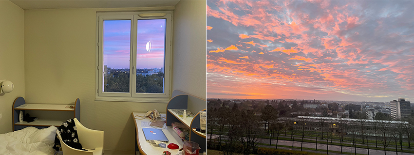
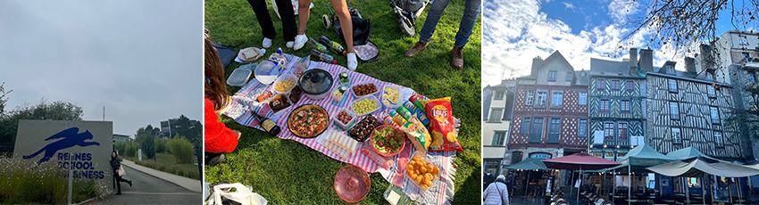
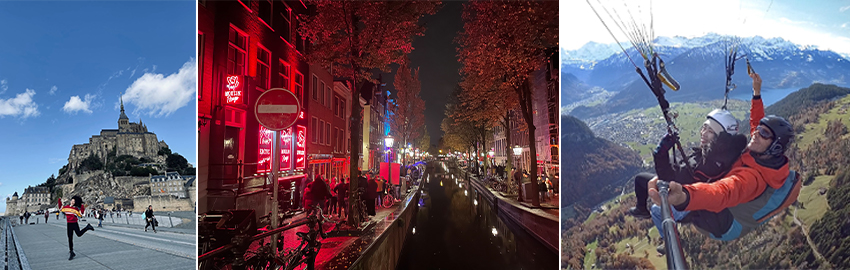
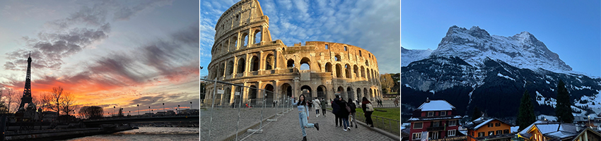

飛機起飛的霎那，帶著渴望被世界改變的心，來到離台灣一萬多公里遠的法國。為期四個月的交換生涯，我居住於法國西北邊的布列塔尼首府（Bretagne）-雷恩市（Rennes），雷恩相對於巴黎的都市感，是個小巧可愛的城市。雷恩的公車地鐵很發達，生活機能不錯，因此也讓我決定於法國雷恩商學院（Rennes School of Business）進行交換。
在這段交換的期間，不論在宿舍及學校裡，都認識了來自世界各地的朋友，讓我親身了解到，原來一個人真的會因為來自不同的國家、有著不同的飲食習慣、而造就著每個人都是特別的個體，思考方式、行為等也會有所差異。而我也在這個文化大熔爐中，心胸更加開闊，更能包容文化所帶來的差異，接納別人的觀點。
|  | ||
| 宿舍內部，歐洲的房間燈光永遠很昏暗 | 宿舍窗外，望出的景象美到根本一幅畫 | |
|  | ||
| 與雷恩商學院的看版合照 | 每周都會與朋友相約公園野餐 | 雷恩的傳統建築：木筋屋 |
透過在各國的旅行中，了解到原來世界是這麼大，走訪了法國的世界遺產-聖米歇爾山（Mont-Saint-Michel），也沉浸在充滿大麻味的荷蘭首都-阿姆斯特丹（Amsterdam）；可以是被瑞士壯闊的高峰雪景震懾到落淚，也可以是在歷史古蹟中的義大利找到自己。或許在這過程中，會遇到許多不順遂的事情，例如行李跟筆電被偷QQ、或當下覺得過不去的坎、覺得自己沒辦法完成的事情，經過了時間的拉長、放遠後，好像就只是人生中的一小片記憶，很多事情都是，近看是大事，遠看是小事，遇到困難有時候難免會自我懷疑，想逃回自己的舒適圈，但挺過去之後，會非常有成就感。也正是因為這些事物的刺激，讓我覺得活著真好。逼著我成長的同時，我也慢慢理解了旅行的意義，所有新鮮且具有挑戰的生活，都讓我覺得活著真好！
|  | ||
| 世界遺產：聖米歇爾山 （Mont-Saint-Michel） |
荷蘭Amsterdam：紅燈區 | 瑞士的因特拉肯（Interlaken）， 人生第一次滑翔傘 |
|  | |||
| 夕陽餘暉下，遊塞納河所攝的 艾菲爾鐵塔（Eiffel Tower） |
世界遺產：羅馬競技場 （Colosseum） |
瑞士最喜歡的城市：格林德瓦 （Grindelwald） |
|
自己獨自在國外生活了四個月，回想第一天自己扛著超重的行李，公車不會搭、不知道超市在哪裡、也不會講法文。到一個自己完全陌生的國家生活，每天在上演著絕地求生。到後來能自己好好的過每一天，習慣了法國的天氣、生活步調及飲食習慣後，慢慢也學會了如何像法國人一樣享受著生活。不論是在學校或旅程中，都遇到了很多意想不到的事情，從來沒有碰過的問題，但也因為這些過程，讓我的內心更加強大。在世界變化無窮的同時，我們唯一能做的，就是有一顆接受所有一切事情的發生的心，去接納它、處理它、享受它，然後變成我們成長的養分，也謝謝這段不可思議的旅程，讓我成長好多。到現在還是覺得自己做了一個很棒的夢，有痛苦的事情，也同時被好多美好的事情安慰著。這趟旅程也讓我的人生觀、價值觀和世界觀有著革命性的改變。世界很大，勇敢跳脫舒適圈吧！